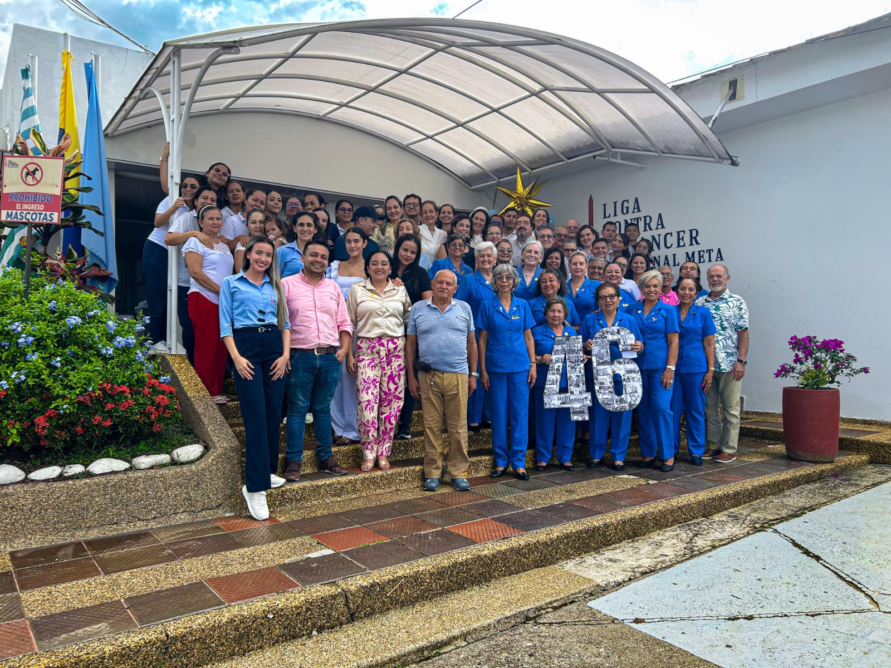

📞
Contactanos: 3102040672 – 3134628259
📧
entregaresultados.ligameta@gmail.com
📍
Carrera 40 No. 37 – 102 Barrio Barzal
Inicio
Atencion al Paciente
Derechos y deberes del paciente
Entrega de resultados
Solicitud de historia clínica
Preparación para procedimientos
Canales de comunicación PQRSF
Nuestra Institución
Quiénes somos
Voluntariado
Nuestras instalaciones
Régimen tributario
Educación
Campañas Institucionales
Eventos
Programas Educativos
Profesionales
SIG Liga
Como Donar
Inicio
Atencion al Paciente
Derechos y deberes del paciente
Entrega de resultados
Solicitud de historia clínica
Preparación para procedimientos
Canales de comunicación PQRSF
Nuestra Institución
Quiénes somos
Voluntariado
Nuestras instalaciones
Régimen tributario
Educación
Campañas Institucionales
Eventos
Programas Educativos
Profesionales
SIG Liga
Quiero Ser Voluntario
Nuestro Equipo de Trabajo

Agendar Cita